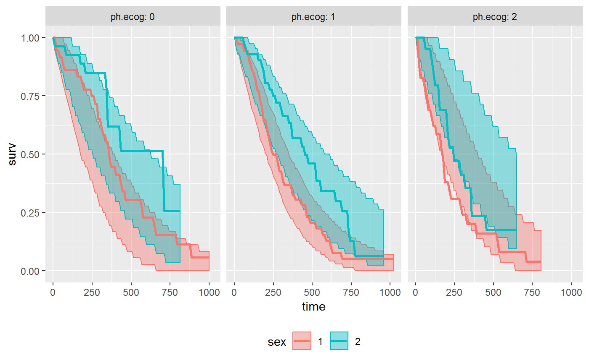

The goal of survParamSim is to perform survival simulation with parametric survival model generated from ‘survreg’ function in ‘survival’ package.
Outputs include prediction intervals of Kaplan-Meier estimates and hazard ratio of treatment effect. You can also access raw simulated survival profiles of each simulation for post-processing.
In each simulation, coefficients are resampled from variance-covariance matrix of parameter estimates to capture uncertainty in model parameters.
Installation
You can install the package from GitHub using devtools.
install.packages("devtools")
devtools::install_git("https://github.com/yoshidk6/survParamSim")Example
This is a basic example which shows you how to solve a common problem.
First, run survreg to fit parametric survival model:
library(survival)
library(survParamSim)
set.seed(12345)
fit.lung <- survreg(Surv(time, status) ~ sex, data = lung)
fit.lung
#> Call:
#> survreg(formula = Surv(time, status) ~ sex, data = lung)
#>
#> Coefficients:
#> (Intercept) sex
#> 5.488584 0.395578
#>
#> Scale= 0.755088
#>
#> Loglik(model)= -1148.7 Loglik(intercept only)= -1153.9
#> Chisq= 10.4 on 1 degrees of freedom, p= 0.00126
#> n= 228Next, run parametric bootstrap simulation:
# Remove a few subjects for later plotting purpose
newdata <-
lung %>%
dplyr::filter(!is.na(ph.ecog), ph.ecog <= 2)
sim <- surv_param_sim(object = fit.lung, newdata = newdata,
# Simulating only 100 times to make the example go fast
n.rep = 100)
sim
#> ---- Simulated survival data with the following model ----
#> survreg(formula = Surv(time, status) ~ sex, data = lung)
#>
#> * Use `calc_km_pi()` function to get survival curves and median survival time
#> * Use `extract_sim()` function to extract individual simulated survivals
#> * Use `calc_hr_pi()` function to get hazard ratio
#>
#> * Settings:
#> #simulations: 100
#> #subjects: 226 (without NA in model variables)Calculate survival curves with prediction intervals
km.pi <- calc_km_pi(sim, trt = "sex", group = c("ph.ecog"))
km.pi
#> ---- Simulated and observed (if calculated) survival curves ----
#> * Use `summary()` function to extract median survival times
#> * Use `plot_km_pi()` function to draw survival curves
#>
#> * Settings:
#> trt: sex
#> group: ph.ecog
#> pi.range: 0.95
#> calc.obs: TRUE
plot_km_pi(km.pi) +
ggplot2::theme(legend.position = "bottom")
Calculate hazard ratios with prediction intervals:
hr.pi <- calc_hr_pi(sim, trt = "sex", group = c("ph.ecog"))
hr.pi
#> ---- Simulated and observed (if calculated) hazard ratio ----
#> * Use `summary()` function to extract prediction intervals and observed HR
#> * Use `extract_hr()` function to extract individual simulated HRs
#> * Use `plot_hr_pi()` function to draw histogram of predicted HR
#>
#> * Settings:
#> trt: sex
#> (2 as test trt, 1 as control)
#> group: ph.ecog
#> pi.range: 0.95
#> calc.obs: TRUE
plot_hr_pi(hr.pi)